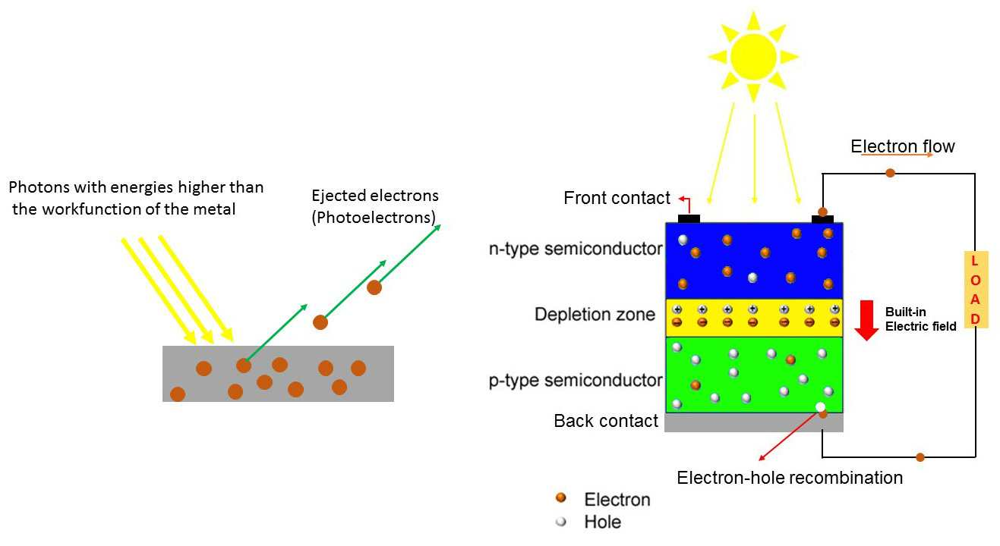
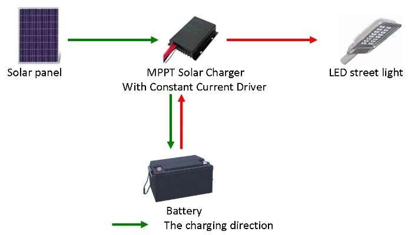
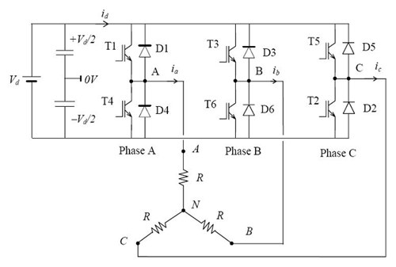
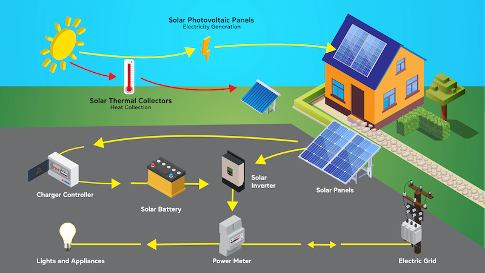

HOW DOES SOLAR PANEL WORK?
Introduction:
In the pursuit of sustainable and renewable energy, solar power has emerged as a leading solution, offering clean and abundant resources [1].
The Basics of Solar Panels:
Solar panels, or photovoltaic (PV) cells, serve as the primary components in a solar energy system. These devices convert sunlight into electricity through the photovoltaic effect, generating a direct current (DC) that forms the foundation for powering homes, businesses, and other applications [2].
The Photovoltaic Effect:
As sunlight interacts with semiconductor materials in the solar cells, electrons are released from their atoms, creating an electric potential. The movement of these energized electrons generates an electric current, which is harnessed as usable electrical power [3].
The Structure of a Solar Panel:
Solar panels consist of multiple interconnected solar cells within a module, protected by layers of glass and polymer resin, allowing sunlight to penetrate the surface while shielding them from external elements [4]. Proper installation, orientation, and maintenance of solar panels are essential for maximizing their efficiency [5].

How Photons from Sunlight triggers Photoelectric Effect
Maximum Power Point Tracking (MPPT) Solar Chargers:
To enhance the efficiency of solar panels, MPPT solar chargers dynamically adjust the electrical operating point of the solar panels, ensuring that they operate at their maximum power output [6][7].

Inverter and Power Conversion:
While solar panels generate DC electricity, most electrical devices and power grids operate on alternating current (AC). Inverters play a crucial role in converting DC to AC, making solar energy compatible with existing electrical systems [9].

Environmental Impact and Benefits:
Beyond the technological components, the environmental benefits of solar energy are a driving force in its widespread adoption. Solar power minimizes air pollution, reduces greenhouse gas emissions, and contributes to a sustainable energy future [10][14].
Future Innovations:
Continual advancements in solar technology are shaping the future of renewable energy. Innovations such as flexible solar panels, transparent solar cells, and efficient energy storage solutions are on the horizon, promising increased accessibility and scalability for solar power [11][12][13][15].
Conclusion:
Understanding the entire solar energy system, from solar panels to MPPT solar chargers and inverters, is key to unlocking the full potential of solar power [1][2]. By harnessing the energy of the sun and employing cutting-edge technologies, we can pave the way for a more sustainable, clean, and efficient energy future.

References
- Solar Energy Industries Association, “Climate Change,” SEIA. [Online]. Available: https://www.seia.org/initiatives/climate-change. [Accessed: Apr. 20, 2025].
- U.S. Energy Information Administration, “Solar Explained—Photovoltaics and Electricity,” EIA. [Online]. Available: https://www.eia.gov/energyexplained/solar/photovoltaics-and-electricity.php. [Accessed: Apr. 20, 2025].
- Energy Education, “Photovoltaic effect,” EnergyEducation.ca, May 2024. [Online]. Available: https://energyeducation.ca/encyclopedia/Photovoltaic_effect. [Accessed: Apr. 20, 2025].
- Maysun Solar, “What Are Solar Panels Made Of And How Do They Work?,” MaysunSolar.com, Jul. 2024. [Online]. Available: https://www.maysunsolar.com/blog-what-are-solar-panels-made-of-how-do-they-work/. [Accessed: Apr. 20, 2025].
- American Fuel & Petrochemical Manufacturers, “Petrochemicals: The Building Blocks for Wind and Solar Energy,” AFPM.org, 2015. [Online]. Available: https://www.afpm.org/newsroom/blog/petrochemicals-building-blocks-wind-and-solar-energy. [Accessed: Apr. 20, 2025].
- Electronics StackExchange, “Understanding the working of an MPPT solar charger,” Electronics.StackExchange.com, Jan. 2020. [Online]. Available: https://electronics.stackexchange.com/questions/519900/understanding-the-working-of-an-mppt-solar-charger. [Accessed: Apr. 20, 2025].
- Victron Energy, “Operation—BlueSolar MPPT Solar Chargers,” Manual_BlueSolar_150-35__150-45, 2023. [Online]. Available: https://www.victronenergy.com/media/pg/Manual_BlueSolar_150-35__150-45/en/operation.html. [Accessed: Apr. 20, 2025].
- Sinovoltaics, “Blocking Diode and Bypass Diode for Solar Panels,” Sinovoltaics.com, 2015. [Online]. Available: https://sinovoltaics.com/learning-center/off-grid/blocking-diode-bypass-diode-solar-panels/. [Accessed: Apr. 20, 2025].
- Mr. Solar, “Inverters,” MrSolar.com, 2024. [Online]. Available: https://www.mrsolar.com/inverters/. [Accessed: Apr. 20, 2025].
- RoofIt.Solar, “What are the environmental benefits of solar energy?,” RoofIt.Solar, Nov. 2024. [Online]. Available: https://roofit.solar/environmental-benefits-of-solar-energy/. [Accessed: Apr. 20, 2025].
- Greenlancer, “Transparent Solar Panels: The Future of Renewable Energy?,” Greenlancer.com, Mar. 2025. [Online]. Available: https://www.greenlancer.com/post/transparent-solar-panels. [Accessed: Apr. 20, 2025].
- M. Gonick, “Paper-thin solar cell can turn any surface into a power source,” MIT News, Dec. 2022. [Online]. Available: https://news.mit.edu/2022/ultrathin-solar-cells-1209. [Accessed: Apr. 20, 2025].
- Atlas Copco, “Renewable energy storage systems to power the future,” AtlasCopco.com, 2024. [Online]. Available: https://www.atlascopco.com/en-us/construction-equipment/resources/generators-guide/renewable-energy-storage-to-power-the-future. [Accessed: Apr. 20, 2025].
- D. Robertson, “Increasing use of renewable energy in US yields billions of dollars of benefits,” The Guardian, May 29, 2024. [Online]. Available: https://www.theguardian.com/environment/article/2024/may/29/renewable-energy-us-financial-benefits. [Accessed: Apr. 20, 2025].
- National Renewable Energy Laboratory, “Storage Futures Study,” NREL.gov, 2023. [Online]. Available: https://www.nrel.gov/analysis/storage-futures.html. [Accessed: Apr. 20, 2025].